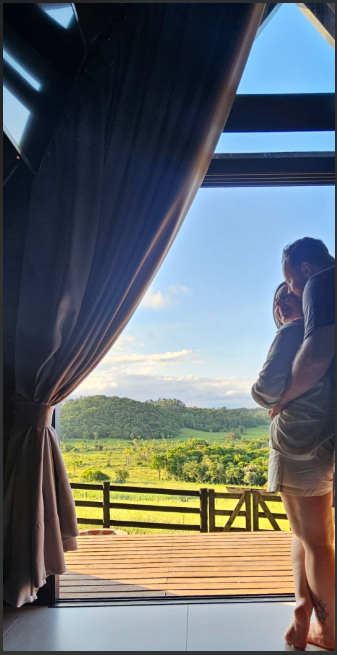
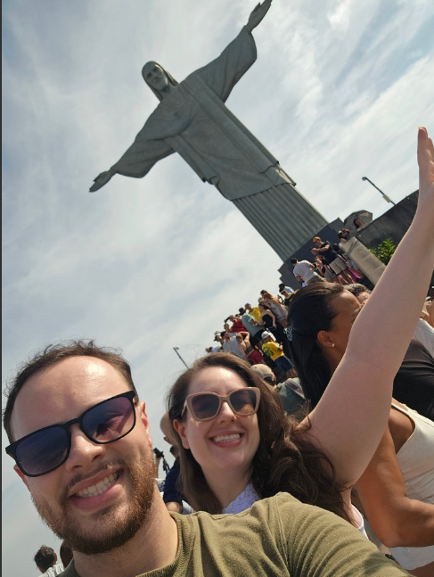
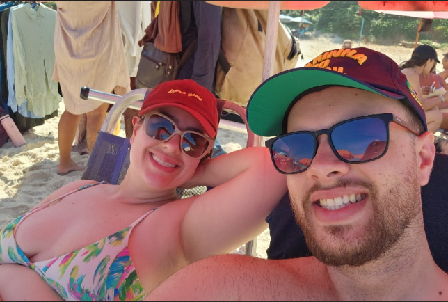
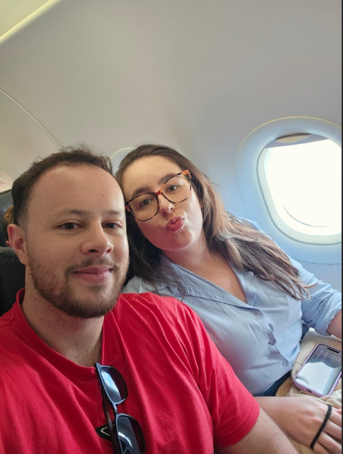
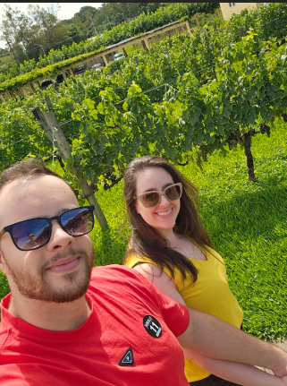
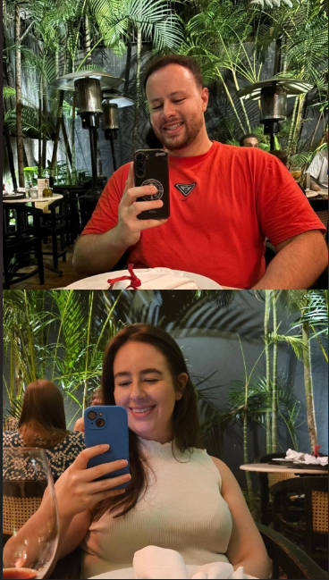
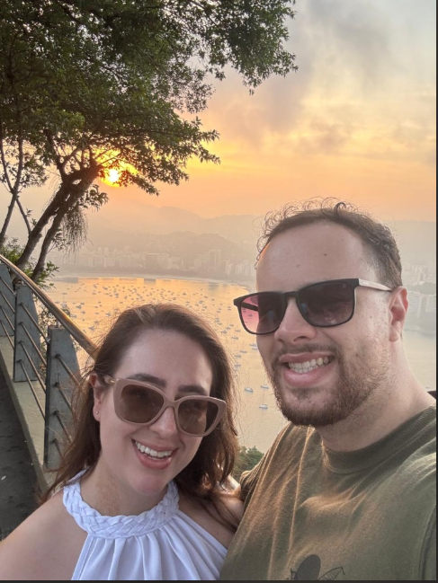
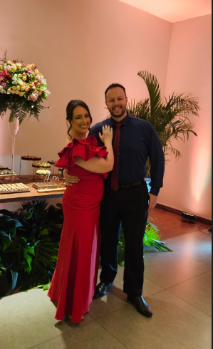
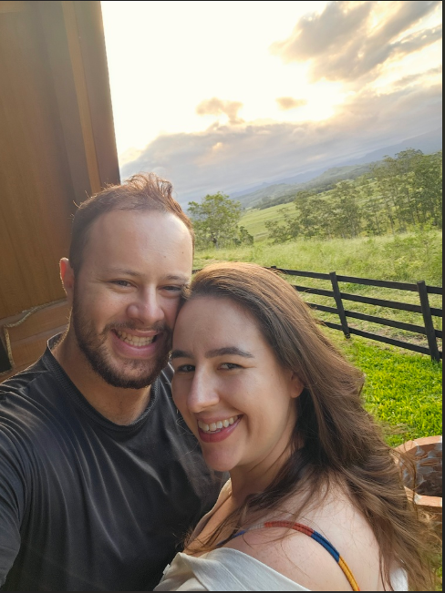
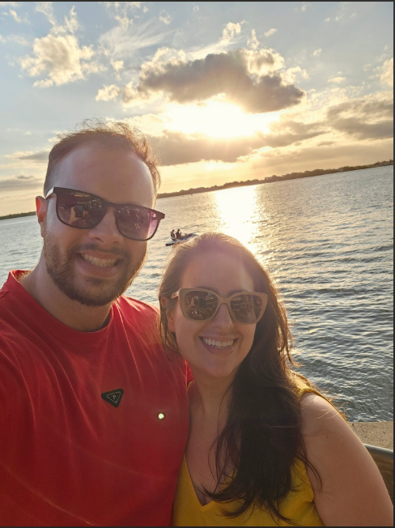

Preparei essa surpresa para lembrar um pouquinho da nossa história, dos lugares incríveis que já conhecemos e de tudo que ainda vamos viver juntos.
Nossa virada de ano em meio à natureza. A cabana, o mato, a hidro relaxante... um começo de ano perfeito e muito especial para nós.
A combinação que a gente precisava: a tranquilidade de uma cabana incrível e a energia da praia ao mesmo tempo.
Aquele dia delicioso que fomos passear, aproveitar a companhia um do outro e, claro, comer muito bem na Fat Bull!
Nossa aventura na selva de pedra rendeu memórias incríveis, focadas no que há de melhor: muita comida boa e momentos nossos.
O turismo inesquecível no Cristo, a energia maravilhosa da praia e aquela baita vista que tínhamos da sacada do prédio, de frente pra Barra da Tijuca.
Nossa próxima aventura já está marcada. Mal posso esperar para viver o friozinho, o fondue e criar mais momentos especiais ao seu lado!
Os sorrisos e momentos que guardo com carinho.

A nossa vista

Turistando no RJ

Sombra e água fresca

Prontos para voar

Um dia lindo

Comida boa e você

Colecionando pores do sol

Você estava deslumbrante

Nós

Sempre com você
"Minha Nicole,"
Olhar para trás e ver todos esses lugares que já conhecemos me faz perceber que a melhor parte da viagem nunca foi o destino, mas sim a companhia. Desde a tranquilidade das cabanas até a correria da cidade grande, cada momento ao seu lado se torna inesquecível.
A música ali de cima diz tudo o que eu sinto: Deus tava me preparando esse tempo todo, te deixou pro final, tava escondendo o ouro. E é exatamente assim que eu me sinto hoje: encontrei o meu maior tesouro. Que a gente continue colecionando carimbos, risadas, pores do sol e memórias perfeitas. Mal posso esperar por Gramado e por todos os outros destinos que o mundo nos reserva. Feliz Dia dos Namorados!
Com todo o meu amor,
Seu Vitão